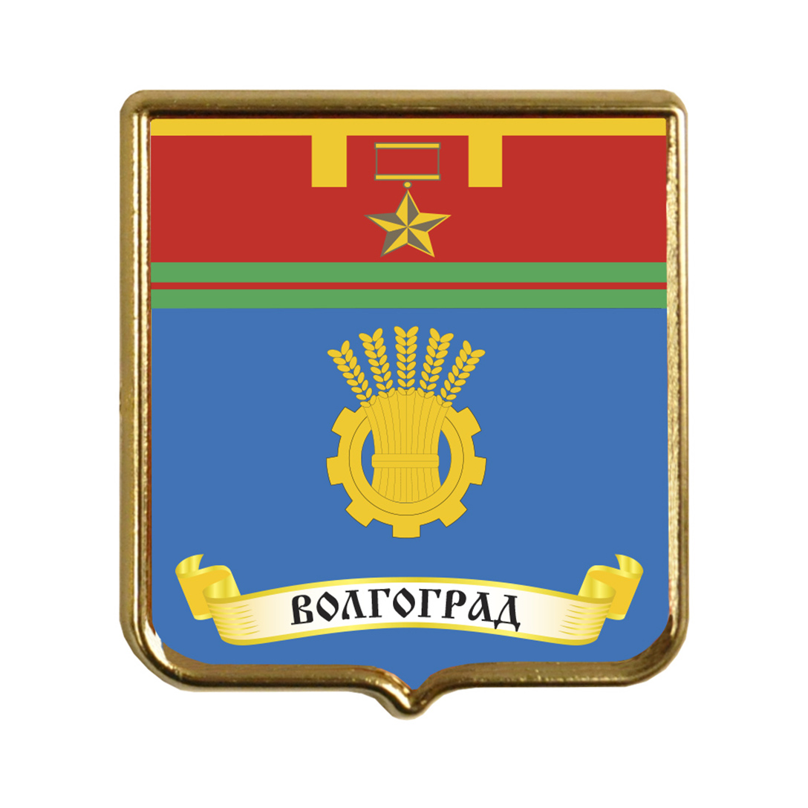
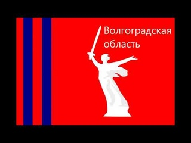

Материал из Википедии- свободной энциклопедии
У этого термина существуют и другие значения, см. Волгоград.
Волгогра́д (до 1925 года — Цари́цын, до 1961 года — Сталингра́д) — город на юго-востоке европейской части России с населением 1 025 662 человек (2023) Административный центр Волгоградской области. Город-герой, важнейший пункт обороны Царицына и Сталинградской битвы. Город областного значения, образует городской округ
Возник около 1555 года на острове близ левого берега Волги, но вскоре был перенесён на мыс правого берега при впадении в Волгу реки Царицы, по которой и получил название Царицын. Гидроним «Царица», в свою очередь, произошёл из тюркского «Сары-су» (сары — «жёлтый», су — «вода»). Есть также гипотеза, что название Царицын образовано от названия острова, которое на картах XIV—XVI веков надписывалось как «Цицара». Предполагается, что это иранское название с неизвестным значением. По оценке Е. М. Поспелова, правдоподобно допущение, что изображение острова восходит к неизвестному средневековому арабскому источнику, а надпись имела лишь пояснительный характер (арабское джезира означает «остров») и, таким образом, надпись «Цицера» к названию города отношения не имеет
На месте современного Волгограда, между реками Сухая и Мокрая Мечётка находилось ордынское поселение с неизвестным названием. Российские переселенцы назвали его руины Мечётным городищем, там найдены монеты улуса Джучи с 1274 по 1377 год[10]. Современные археологи обследовать городище не успели, так как его строения растаскивались на строительный кирпич с самого момента основания Царицына[11]. Профессиональная экспедиция 1920 года археолога Баллада была прервана Гражданской войной, и окончательно следы Мечётного городища уничтожены ведущейся с 1930-х годов по настоящее время застройкой волгоградского микрорайона Спартановки (здесь же погибла стоянка древнего человека Сухая Мечётка)[12]. Гидроним «Мечётка» вероятно дан по этому поселению, он встречается в центральной России и происходит от др.-рус. «мечькъ» — медведь[13], но в степи они не обитают, и, наиболее вероятно, река названа по существовавшим развалинам мечети[14]. Волгоград не является преемником этого поселения, оно расположено в 18 км севернее исторического ядра Царицына и прекратило своё существование за 200—250 лет до его основания. Золотоордынское поселение существовало также в устье реки Царицы
Географическое положение
Волгоград, как и вся Волгоградская область находится в часовой зоне МСК (московское время). Смещение применяемого времени относительно UTC составляет +3:00[84]. В соответствии с применяемым временем и географической долготой[85] средний солнечный полдень в Волгограде наступает в 12:02. Волгоград расположен в нижнем течении Волги на западном её берегу с разнообразными формами рельефа: Приволжской возвышенности своей самой южной оконечностью, восточную часть города занимает Сарпинская низменность она представленная Сарпинско-Даванская ложбина начинающейся в районе Виновки и тянущийся между первой и второй террасами Волги практически через весь город с севера на юг, по которой, к примеру проходит Первая Продольная Магистраль города, в восточной части «Заканалья» Красноармейском районе Сарпинская низм. представлена не только Сарпино-Даванской ложбиной шириной в несколько км, но и собственно Сарпинской низменностью и так же в этом районе расположены участки Ергеней заходящие в черту городского округа Волгоград.
Климат
Климат умеренно-континентальный, засушливый. Среднее количество осадков — 217 мм в год. Зима мягкая, с частыми оттепелями, лето жаркое и долгое, во все времена года возможны резкие перепады температуры. В 1940 году были зафиксированы температурный минимум (−33 °C) и температурный максимум (+42,6 °C)
Экология
Волгоград характеризуется средним экологическим состоянием. Основным загрязнителем атмосферы является автомобильный транспорт — 70 % выбросов. Среди объектов промышленности наибольшими выбросами характеризуются металлургия, химическая и топливная промышленность. Более половины выбросов приходится на Красноармейский район, наивысший индекс загрязнения в Краснооктябрьском районе. В целом по городу наблюдается повышенное содержание оксидов азота, формальдегида, фенола[94][95]. Индекс загрязнения воды в Волге варьируется от 1,36 до 2,04[обновить данные]. Городские биологические очистные сооружения, через которые проходит основной объём сточных вод, располагаются на острове Голодный. Сточные воды, прошедшие очистку на этих сооружениях, не превышают предельно допустимое содержание соединений азота, взвешенных веществ, меди, цинка, фторидов, фосфатов
Статус города областного значения у Волгограда закреплён в рамках административно-территориального устройства Волгоградской области согласно Уставу области и Закону области «Об административно-территориальном устройстве Волгоградской области» от 07 октября 1997 года № 139-ОД[97][98][99]. В рамках муниципального устройства Волгоградской области, с 2006 года образует городской округ город-герой Волгоград как единственный населённый пункт (с 2010 года) в его составе
| Национальность | Количество
(чел) |
Процент от общего
состава населения(%) |
|---|---|---|
| Русские | 908 098 | 90 |
| Казахи | 18 162 | 1,80 |
| Украинцы | 14 025 | 1,39 |
| Армяне | 10 998 | 1,09 |
Старейший из сохранившихся — памятник Гоголю 1910 года в Комсомольском саду возле театра НЭТ. Уцелел, потому что писатель Гоголь не имел отношения к власти и политике, все остальные памятники государственным деятелям царской эпохи уничтожены в 1920-х годах. Также дошли до наших дней 3 предвоенных памятника: Ерману 1925, Дзержинскому 1935 и Хользунову 1940. Пережил войну с повреждениями и восстановлен после типовой фонтан Бармалей, однако в 1951 году снесён как не представляющей художественной ценности. Но благодаря знаменитой фотографии Евзерихина, показавшей ужас войны — скульптуры детского хоровода на фоне горящего города и с годами ставшей символом Сталинградской битвы, реплика фонтана воссоздана на Привокзальной площади.
Герб
Флаг
